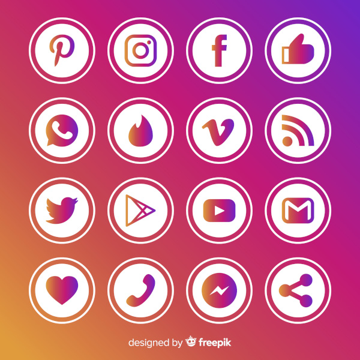

A tecnologia faz parte da nossa rotina todos os dias, mesmo quando não percebemos. Desde o momento em que acordamos e olhamos o celular até a hora de dormir, estamos cercados por dispositivos tecnológicos que facilitam a vida.
Ela ajuda na comunicação, no trabalho, nos estudos e até no lazer. Aplicativos, computadores e a internet tornaram as tarefas mais rápidas e práticas.
Uma das maiores mudanças causadas pela tecnologia foi na forma como nos comunicamos. Antes, as pessoas dependiam de cartas ou ligações fixas. Hoje, é possível enviar mensagens instantâneas para qualquer lugar do mundo.
Redes sociais, aplicativos de mensagens e chamadas de vídeo aproximam pessoas que estão longe, reduzindo distâncias e tempo de espera.

Na educação, a tecnologia trouxe novas formas de aprender. Plataformas online, vídeos educativos e cursos à distância permitem que qualquer pessoa estude de onde estiver.
Além disso, ferramentas digitais ajudam professores e alunos a organizarem melhor o conteúdo e o tempo de estudo.
No ambiente de trabalho, a tecnologia aumenta a produtividade. Sistemas de informação, planilhas e softwares específicos ajudam empresas a tomar decisões mais rápidas e organizadas.
Muitas profissões surgiram graças à tecnologia, principalmente na área de TI, que cresce cada vez mais.
Apesar de todos os benefícios, é importante usar a tecnologia com equilíbrio. O excesso pode causar problemas como falta de concentração e dependência digital.
Por isso, o ideal é aproveitar os recursos tecnológicos de forma consciente, usando-os como ferramentas para melhorar a vida, e não como um problema.
A tecnologia é uma aliada importante no dia a dia das pessoas. Quando bem utilizada, ela facilita tarefas, aproxima pessoas e amplia o acesso ao conhecimento.
Aprender a usar a tecnologia de forma correta é essencial para o presente e para o futuro.